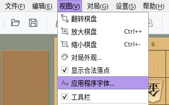
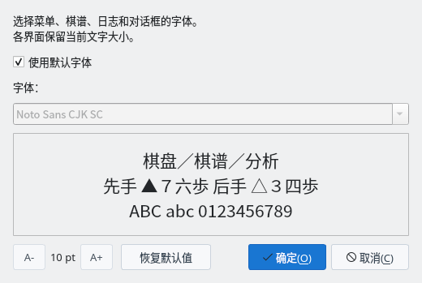
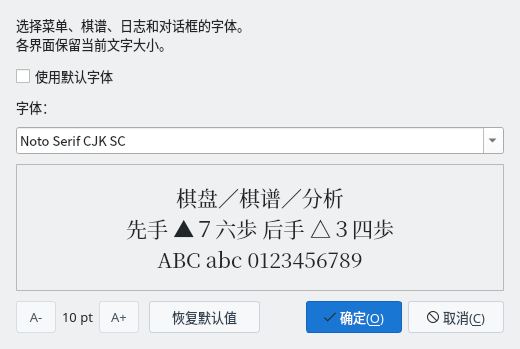
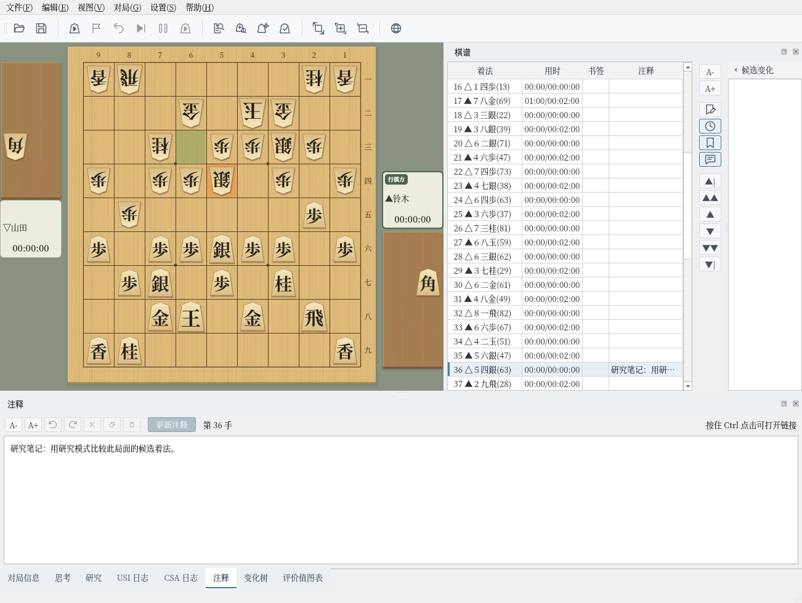

应用程序字体
一次性将菜单、棋谱、日志和各对话框的字体换成喜欢的字体
截图在 Linux 上以简体中文界面拍摄。字体列表中显示的是您电脑上已安装的字体。
选择字体
通过“视图”菜单中的“应用程序字体…”设置整个程序的字体
打开菜单栏中的“视图”，选择“应用程序字体…”，即可打开“应用程序字体”对话框。菜单面板的“视图”标签页中也有相同的按钮。
初始状态下勾选了“使用默认字体”，使用与界面语言相应的默认字体（见下表）。


“视图”菜单中的“应用程序字体…”


应用程序字体对话框（初始状态）
取消勾选“使用默认字体”后，即可从“字体”列表中选择。列表中显示的是您电脑上已安装的字体。
下方的预览会以所选字体显示“棋盘／棋谱／分析”“先手 ▲７六歩 后手 △３四歩”“ABC abc 0123456789”三行，可以确认汉字、符号、字母和数字的效果。此时程序的显示还不会改变。


字体选择“Noto Serif CJK SC”
点击“确定”后，整个程序的字体会立即改变，无需重启。菜单、棋谱、各面板、对话框，以及棋盘周围的对局者名称、剩余时间和坐标都会使用所选字体。
所选字体会自动保存，下次启动时继续使用。点击“取消”则不做任何更改并关闭对话框。


点击“确定”后的主窗口（Noto Serif CJK SC）
默认字体与文字大小
随时可以恢复默认字体，文字大小保持各界面的设置
勾选“使用默认字体”时，会根据界面语言和操作系统使用以下字体。
| 界面语言 | Windows | macOS | Linux |
|---|---|---|---|
| 日语 | Yu Gothic UI 等 | Hiragino Sans | Noto Sans CJK JP 等 |
| 中文（简体） | Microsoft YaHei UI | PingFang SC | Noto Sans CJK SC |
| 中文（繁体） | Microsoft JhengHei UI | PingFang TC | Noto Sans CJK TC |
| 英语 | 各操作系统的默认字体。棋谱等日文以日语的默认字体显示 | ||
电脑上没有表中的字体时，会查找适用于同一语言的其他字体（日语为 Meiryo UI、IPAexGothic 等），都没有时使用操作系统的默认字体。
点击“恢复默认值”后，“使用默认字体”会被勾选，列表也会恢复为默认字体。点击“确定”后，整个程序恢复为默认字体。
此对话框只更改字体。文字大小保持在棋谱面板、各对话框的“A-”“A+”等处为各界面设置的大小。
对话框左下角的“A-”“A+”及其间的数值（pt）用于调整此对话框本身的文字大小。文字大小和对话框大小会在下次打开时沿用。